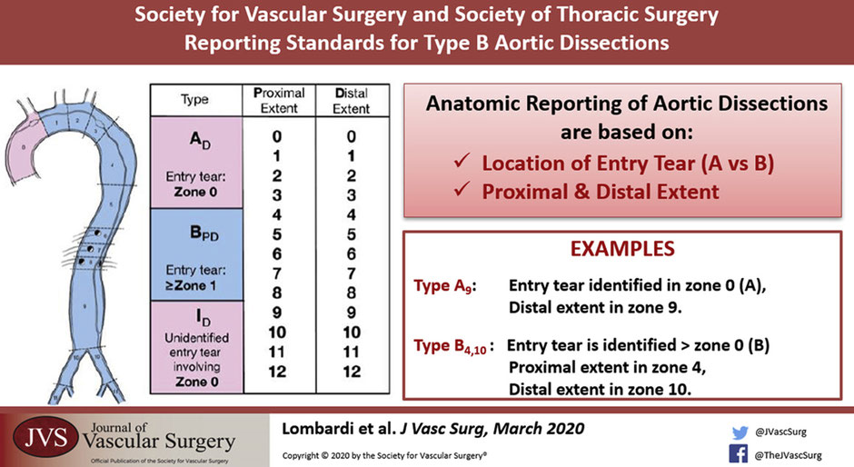

8 Thoracic Aorta
8.1 Aortic Dissection
01 Nov 2021: Matt Spreadbury, MD; Adham Elmously, MD; Einar Brevik, MD and Joseph Lombardi, MD
What is an aortic dissection?
It’s when a tear occurs in the intima that results in separation of layers of the intima and media and allows blood to flow through the false lumen.
How common are they and how serious are they?
Acute dissections occur around 3/100000 - 2-3x more common than ruptured aortic aneurysm. For Type A dissections, early mortality 1-2% per hour - if untreated, 20% die within 6 hours, 50% within 24 hours, 70% first week.
Main cause of death in type A is aortic rupture into the pericardium, acute aortic regurgitation, and coronary ostia compromise. While patients with descending thoracic aortic dissections are more likely to die from end organ compromise due to obstruction of visceral or extremity vessels in the acute phase of the disease.
The time frame is also important.
Hyperacute <24 hours
Acute < 2 weeks
Subacute 2 weeks – 3 months -> TEVAR
Chronic >3 months -> Chronic aneurysmal degeneration/ partial false lumen thrombosis (highest risk) = operative treatment
When we think about aortic dissections there are a few classifications, how can we break it down?
Historically, there are the Stanford and Debakey Criteria.
Anatomical Stanford
Type A - involves the ascending aorta, 2/3 (most common)
Type B - arises from distal to L subclavian, 1/3
Debakey
A
1 - ascending + descending
2 - ascending only
B - distal or at the LSCA.
3a - Descending aorta above diaphragm
3b - Descending aorta above and below diaphragm
How about the new system proposed by Dr Lombardi, the SVS-STS classification system?
The new system published in 2020 keeps A and B and adds a number system which divides the aorta into zones from 0 proximaly to 12 distally in the mid SFA.[415]

Type A is now JUST the ascending aorta to the innominate, also called Zone 0.
Type B is now an entry tear in Zone 1 or greater and distally to whichever zone the dissection lands in.
This anatomical classification is based on reading the CT angio. What else could we see on a CT angio that we have to know about?
So aside from the aortic dissection its self, you could see a bleb of contrast sticking out. That could be an penetrating aortic ulcer. That is an atherosclerotic lesion that penetrates the internal elastic lamina of the aortic wall.
Another key finding can be an intramural hematoma which is a hyperdense crescent shaped hemorrhage within the aortic wall. There is no identifiable direct communication between the true and false lumen. IMH are classified in the same way but with the abbreviation IMH p-d zones.

Whats the significance of these two in combination?
There is a higher chance of aortic rupture if a penetrating aortic ulcer is seen with intramural hematoma.
When a patient presents with an aortic dissection how can we classify them clinically?
Uncomplicated
Stable hemodynamics
No evidence of malperfusion
Pain controlled
Complicated
End organ ischemia / malperfusjon
Rupture or impending rupture
High risk
Uncontrollable pain / hypertension
Bloody pleural effusion
Aortic diameter >40mm / False lumen diameter > 22mm
Readmission
Radiographic only malperfusion
Entry tear on the lesser curve
What is the danger of a false lumen? How does it lead to symptoms and malperfusion? Likewise which arteries commonly branch off the true lumen?
The false lumen can lead to end organ ischemia as the intimal flap can cover the ostia of branching vessels. This can be a static or a dynamic obstruction.
Likewise it also leads to weakening in the wall of the aorta which can become a threatened rupture or rupture if the diameter of the false lumen is larger than 22mm.
The celiac trunk, SMA, right renal typicaly come of the true lumen. Left renal comes off the false.
Also the dissection most commonly goes down into the left common illiac rather than the right. You might be able to detect down stream effects of this on clinical exam with reduced left sided groin pulse.
What kind of patients get aortic dissections?
Hypertension (older patients) / cocaine or Meth (younger patients)
Marfans, loeys-Dietz, Ehlers danlos Type 4, Turners, Arteritis, Bicuspid aortic valve.
We also have a traumatic cause of aortic dissections. That being called blunt thoracic aortic injury:
Grade 1: intima tear
Grade 2: IMH
Grade 3: Pseudo aneurysm
Grade 4: Aortic rupture.
How do these patients present?
Signs and symptoms – Chest pain 90% tearing pain radiating between the shoulder blades.
Chest pain extending to the abdomen abdomen? Think mesenteric ischemia or aortic tear
Type A - Stroke 5-10%, Syncope 15%, tamponade, carotid dissection, paralysis.
Others: MI – Hypovolemic shock – leg ischemia
What is the workup?
Physical Exam – Asymmetric pulses / blood pressure differences / Diastolic murmur,
Investigations - CXR, EKG, D-dimer + Troponin, CTA, ECHO for type A.
The big distinction is to find out if this is a type A or type B because the treatment strategy is completely different.
Type A need an emergent operation
Type B starts with medical management, follow up CT angio +/- Trans esophageal echo in the OR. Reevaluate at 24 hours.
What are the details of Type A treatment?
Operative treatment. 30% op mortality. Cardiothoracics take the lead on this one. However vascular surgeons should be involved in the management of type A as after the repair, a type A can become a functional type B.
Type B is in the realm of vascular surgery. What is the first management step after we have diagnosed a type B dissection?
Invasive impulse therapy. That means redusing the force of transmitted impulse down the aorta. Blood pressure goals of 100-120mmHg. Hr < 60bpm.
How would you achieve that?
Start with a beta-blocker (esmolol or labetalol) first then a vasodilator (nitroprusside). This is to stop the sympathetic surge after vasodialation that could increase pressure and thus tearing forces inside the aorta worsening the dissection.
Initial CT, 72 hours, 3 months x 4, q6 months x2, q12 month. (Descending thoracic aorta that dialates first.)
Why isnt open surgery indicated for type B dissections?
Open surgery is not recommended due to the high mortality 30% if < 48 hours. 18% if > 49 hours.
In the acute setting mortality can be up to 50% with a 20% paraplegia risk. Its been described as sowing tissue paper.
What is the management plan for a complicated Type B aortic dissection?
Start with invasive medical management and plan for TEVAR. The goal with TEVAR being to direct the blood flow into the true lumen and seal the entry tear. If there was a dynamic obstruction (flap occludes branching vessels.) Then TEVAR would reestablish the true lumen hence removing the dynamic obstruction. Endovascular fenestration can also equalise the pressure in the true and false lumen.[416]
For a static occlusion there could be a thrombus or stenosis in the branched vessel so a stent might be indicated.
What are the major risks of TEVAR in the management of Type B aortic dissections?
Retrograde type A (reported 2% in literature however it can be around 20% in some experiences), 5% paraplegia, and stent induced new entry.
Is there a role for TEVAR in uncomplicated type B dissections?
The INSTEAD and INSTEAD XL trials looked at uncomplicated Type B dissections. There was NO statistical difference at 2 years comparing OMT vs TEVAR but at 5 years there was good aortic remodelling and better long term survival in patients treated in the subacute stage.
Timing for TEVAR is a difficult choice. In chronic dissections the septum thickens leading to a potentially difficult TEVAR. Anecdotally TEVAR is best at 2w-3m.
8.2 Thoracoabdominal Aneurysms (TAAA)
02 Dec 2021: Mr. Mohamed Barkat, Mr. Nick Greaves, and Mr. Michael Jenkins
Resources
ESVS recommendation of management of Thoracic aortic pathologies
Open Repair of Thoracoabdominal Aortic Aneurysm: Step-by-Step
8.2.1 Anatomy and Demographics
Can you take us through the Crawford classification to start off?
The Crawford classification is relatively recent, to be honest it was 1986. And I think it was really important because it’s very practical classification, depending on body cavity and how to get to an aneurysm. It’s a bit old in terms of anatomy because they don’t really follow a pattern one would expect going one to four would be getting either more extensive or less extensive. And it’s not quite like that.
So type one is from the left subclavian down to just below the diaphragm. And that’s crucial because that distinguishes it from a thoracic aneurysm, which you can get to just from the chest and from a practical surgical approach. That’s a very important differentiating marker, but you have to go into a second cavity.
Type two is the biggie. So this is from the left subclavian all the way down to your bifurcation. So both abdominal and thoracic exposure, all the visceral, renal arteries and a lot of intercostal and lumbers. So big impact for cord supply, et cetera.
So three is for mid chest down to and involving the viscera renals and bifurcation. And that’s the one, which really is I suppose, the differentiator between whether you go for the full support that’s needed in a type two, or whether you can risk a clamp and go approach.
And type four is characterized by being in most patients accessible from the abdomen. I say in most patients, because there are some anatomical situations with body habitus, which means that going into the left chest is useful even for type four aneurysm.
Then type five. It was an additional classification that came in later, which is a bit like a type three at the top of the type one at the bottom effectively, but not everyone uses that.
There appears to have been an increase in the incidence of thoracoabdominal aneurysms. Do you think it’s a true increase or does this relate to having scans for other reasons picked up by accident and then going on from that? What sort of many referrals do you get in a year and what’s your turn down? How many numbers are you actually doing in your practice year on year?
So that’s interesting because the overall incidence of infrarenal atherosclerotic aneurysms is going down every year in the national UK vascular registry. And I suppose that is a legacy of the end of smoking for a big group of patients. I think thoracoabdominal aneurysms are going up partly because we are now imaging more and more people. and therefore we are imaging the chest and seeing them, which perhaps wasn’t the case, previously. So that’s an artificial increase in incidence, but also the rate of aortic dissection is on the rise, s chronic post dissection aneurysms are increasing. I think it’s a small group, but there is more knowledge about connective tissue disease and genetic studies and family screening, which perhaps is also a small part of annual increase. So over the next, 10, 20 years, certainly aneurysms are not going to go away. And that group of patients that have been affected are still around and there is a huge number now within the national UK screening program under surveillance for small animism, so it will come to fruition.
You’ve just touched on a bit of difference in the etiology between thoracoabdominal aneurysms and abdominal aortic aneurysm. So is there a huge difference in the etiology between these two type of aneurysm from your experience?
On presentation, the majority of aneurysms are asymptomatic. So they’re found incidentally. It is. rare that you get a symptomatic aneurysm? Yes. Some can get tender as they perhaps approach a time when the wall perhaps is going to breach pre rupture.~~ Um,~~ I think thoracoabdominal aneurysms perhaps tend to be a bit more symptomatic and infrarenal. And these are ones that perhaps affect go into the arch and past present with hoarseness tension. Some of them can cause long kill compression.~~ Um,~~ and there is a group that caused dark station of the cross.
And it’s,~~ you know,~~ you know, I’ve seen,~~ uh,~~ over the years, the actual cross of a die from acts like an extrinsic lap and~~ it,~~ it, can be extremely tight at that point. And there was a group of patients that present with excruciating [00:09:00] pain, radiating around their cost of margin. And this is tension on the cross and it’s often not thought of as a sign of a, of an aneurysm, but I think in that group, it is, and the larger, the extent of aneurysm, I think. Things like weight loss general,~~ uh,~~ poor health begins to become increasingly seen in that group with chronic
aneurysms. So there are some subtle differences. The
The, other group that tends to occur, not in informing lack of isms is the post dissection aneurysms, and the majority of those all known about. But there was a time when type a dissections,~~ um,~~ as in sort of DeBakey type one or a Stanford type one, which went all the way down.
We’re only monitored really with echo and the east ending. And the rest was forgotten about, they got lost between two stools, between Claudia. Fantastic. Follow-up that group,~~ um,~~ is a different group Cause w we [00:10:00] already know they’ve got an aneurysm, so there are subtle differences. And then the connective tissue group, I suppose, is a bit different.
because they tend to have more extensive aneurysms rather than just confined to the infrarenal sacrament, which is by far, in the way, the most common for abdominal aneurysms.
Greaves: So you’ve mentioned quite a few different ideologies there. And moving on to specifically thoracic aneurysms, know that as you said, a quarter of these are associated with dissection in the past, as small players will have underlying connective tissue disease, do you think these patients will have a different threshold for intervention compared to the non-connected tissue disorder?
Jenkins: Yeah, I think it’s well established that,~~ um,~~ the risk of rupture in any connective tissue disease. And I think we’ve gotta be aware that the ones we talk about more family
states,~~ uh,~~ vascular stem loss. These are ones that are probably
the tip of the iceberg of a number [00:11:00] of other. Cases that we
don’t know the genetic sequencing for, but behave differently. But data
from a I mentioned point of view is not quite as robust as one would
hope, but~~ the~~ threshold that most people would agree~~
for,~~ for, non connective tissue disorders~~ would be about six
centimeters. And that takes into account the,~~ the increased risks
of operating both in the chest and the Thor abdominal segment. I think
most people would agree that five centimeters is a better cutoff for
connective tissue patients. Some cardiac surgeons would do a young more
funny sending at four and a half centimeters. It does vary a little bit
geographically, a bit like the threshold for infer in Lanny wisdoms,
which varies from you have the states in UK. So you’ve got to look at
the patient in front of you and make a decision. and. I would certainly
upper [00:12:00] threshold for someone who was not so fit and perhaps
lower it a bit for a younger patient, and also be aware of it’s
something all down atomically, a saccular bulge, something where you
think there could be a, my Kotick element.
Those are all very different to knee. You can’t be reassured by a dimension in an axial plane~~ that~~ that is safe. Savannah ups the ante, in terms of,~~ um,~~ whether you would pair at an earlier threshold and I’d include, they have a blowout for an eccentric Pau or anything like that. It is not a conventional fusiform any wisdom.
Barkat: So Mr.
Dinkins, can you talk us through the issue zones of that water and why do we need to know about these?
Jenkins: so is Mo was one of those useful classifications, you know, there’s lots of classifications in medicine,~~ um,~~ but it’s nice to find one that’s actually got a use. And what this did is make sure that everyone was on the same [00:13:00] page when you are reporting,~~ um,~~ zones or seals zones for thoracic devices. So that is important for two reasons.
One the extent of coverage and two, the complications increased, the more proximally you go. And the main complication for that is stroke. So issue Marla decided. to. Classifies zones. So zone zero, which is the first most proximal zone is the sending a water up to and including the brachiocephalic trunk, then between the brachiocephalic trunk and the left common carotid artery is zone one between the left common carotid artery and the left subclavian artery to zoom, to distill to the subclavian artery then is zone three.
And in some people add in a sort of zone for distal to T4 level, which is much lower down the thoracic air, water, and most thoracic stenting will go really to zoom two or perhaps in,~~ into, uh,~~ into zone three or [00:14:00] perhaps into zone two, The more proximal you go, obviously yeah. more work needs to be done in terms of either extra anatomical, deep bond Xing or using some form of fenestrated or launched arch device with an increase in stroke
risk. But what this allowed people to do is compare different series. So you’re not just saying,~~ well,~~ these were a group of TIVA patients. You could define exactly how
proximally they, they go. And the same, I I suppose, applies for the corporate classification. It allows us,~~ um,~~ comparison within thoracoabdominal groups.
And that’s important with both survival and complication rates, because if your series is mainly~~ a~~ type two or extend to dominoes, you’re going to have a very different outcomes from someone who’s got mainly type four. So of dominoes,~~ um,~~ and both glass patients allow you to look at and [00:15:00] data between units.
Greaves: So if a patient has a thoracic aneurysm that affects their ascending aorta, we obviously involve the cardiac surgeons. The patient may require an elephant trunk procedure prior to intervention on the descending aorta. Can you briefly summarize the difference between a conventional elephant trunk and a frozen elephant trunk, and when to use one over.
Jenkins: so,~~ so, um, the vast majority of this I suppose, is
particularly pertinent to the section. So we have to accept a little
of, is also more elective aneurysmal disease, but the main purpose
in,~~ in a type a or LT section is actually to protect the heart. So
people die of either for pericardium or stripping the colony osteo off
and getting ischemia.~~ Um,~~ the. purpose. All the time a repair is
to protect the heart. And to some extent for,~~ uh, uh,~~ uh, type
one, erotic, the is to then [00:16:00] ensure a true lumen flow
distally.~~ Um,~~ and so it was very popular because it was probably
the least invasive to do a short into position, a sending repair, but
that’s really problems for later.
And as people became more adapt and better conjure protection and bring protection~~ um,~~ it became more popular to do a more extensive repair. The first sitting and this involves an
arch repair.~~ Um,~~ and then an acceptance that eventually the descending thoracic aorta will still need to be repaired, but at a later stage, Now you have to be aware that the ACE sending an arch is done from a median sternotomy, and it’s really difficult to get beyond the left sub clave and form that,~~ um,~~ position.
So when the arch was done, it was felt that the elephant trunk came from leaving,~~ uh,~~ an extra piece of [00:17:00] one within the descending thoracic aorta in the two lumen of it during a section or in the main lumen of a, of an aneurysm by a double sewing technique on the distal and Estimote says and an inverting it, and it, would be left free,~~ um,~~ perfused in the descending, thoracic aorta.
And the benefit of that was when one came back to then do the descending thoracic segment,~~ um,~~ via left thoracotomy, You could very quickly open the altar and clamp
that,~~ um,~~ deck on. And then you’ve got a ready, made an estimate SIS to D to do your segment, which was much easier. And it meant you didn’t have to grow up and dissect to the left, to play in whether it be scar tissue~~ in a,~~ in a, previous, in estimate basis. Now, what~~ um,~~ realized is that they could help with this procedure by actually facilitating a device which had four blond shares or three or [00:18:00] four,~~ um,~~ bond shares on a piece of Dacron, which was sized to be a, an arch replacement. And these were ready. So norm survey took 10 millimeter bunches to allow an extra pipe for rewarming. And these could then be sewn to be a nominate, carotid and subclavian and attached to, and piece of Dacron was then a stint graft, which could then be placed distally in, lieu of what was previously a floppy piece of that cone.
And two manufacturers really geo-tech and two-way Alltech,~~ uh,~~ have made these devices, which just facilitate and make things much easy and so-called FET or frozen elephant trunk,~~ um,~~ has now become quite popular. I don’t quite know why it’s called frozen, but I think it perhaps means that the thoracic eight segment is,~~ uh,~~ is, stiff as in a supported evolve rather than just a floppy deck on
segment.
Barkat: [00:19:00] So if we look at it at the isolated,~~ uh,~~ thoracic aneurysm, Mr. Jenkins, can you tell us briefly about the principle of T VAR and what’s the optimal landing zone and in your opinion is rapid ventricular pacing required when deploying these stents.
Jenkins: So I think the isolated, thoracic aneurysm is a perfect
treatment,~~ um,~~ for TIVA because~~ it actually, it, it
fulfills all those minimally invasive credentials in that you can do, an
endoluminal approach. And if you can get a good seal zone, proximally
and distally, it~~ saves us a lot to me. And it’s a massive
difference for the patients,~~ you know,~~ unfortunately I suppose
those cartoons you see on the industry and for it’s so vanishingly rare
when you’ve got a perfect proximal and distal landing zone and have
really straight . um, I think for the majority of cases you still needed
to send to me to seal zone proximally and distally. And I think if
you’ve got a very [00:20:00] torturous aorta, you’ve got to think about
a longer, seal zone you want to land,~~ um,~~ in an area where there
is a good power level walled segment. And you’ve got to be careful of
so-called bird beaking when they, when a stiff, less conformable
device,~~ um,~~ lands perfectly on the outer curve, but holds off on
the inner curve.
So as you’ve got a lip, which protrudes and that’s going, to allow blood to get under that and cause sense, graph crushing, I think modern devices have been now much more conformable. We’ve learned the lessons of oversizing and the problems associated with oversizing. We’ve learned how to tape a stent grafts when there’s mismatch between proximal and distal. and we’ve also got customed taper devices now. So these have all significantly improved things, but there’s still no getting away from the fact that some anatomy is [00:21:00] not well adjusted to the currently available stent, grafts
and Gothic arches, a particular problem.
I’ve already mentioned vape torturous and beta launch sacks, which allow a stench graph to move away from the wasting line to the out to curve.
And as they affect sectors and shrink, you can imagine that draws on both the proximal and distal seals zone and reduces them.~~ So, um,~~ I think you can sometimes get away with a shorter lending zone. If, for example, you’re doing a post traumatic aneurysm where it’s only on one segment VNO the outer wall where there’s a problem. Um, but for the vast majority of two aneurysms, you need that seal zone and you do need to oversize
to achieve that.~~ Um,~~ you can, of course go more proximately. And I think the majority of aneurysms app left some in area, you can just drop them [00:22:00] blood pressure to a systolic of 70 or 80 pharmacologically.
Once you go more proximal to that, especially if you’ve got a custom device where with a scallop or bond device where you need an absolutely critical lending zone,
you then really need to achieve a short transient period of circulatory arrest either with the dentist’s scene, which is perhaps sometimes a bit unreliable. Or~~ rapid ACEing~~ rapid pacing does come with complications though. And,~~ you know,~~ you
can get ventricular puncture from rapid pacing,~~ um,~~ and it can be difficult. There are some newer techniques in terms of Keval, occlusion, balloons as well, which basically stop venous blood returning to the heart with a reduction in outputs. those are gaining popularity certainly in Germany. And they can be quite effective for that.~~ Um,~~ I think,~~ you know,~~ having. Tip capture on devices and better, more accurate [00:23:00] deployment and better imaging does allow you~~ to,~~ to, actually be more accurate in deployment, but there are still problems.
These devices have been inserted to very torturous IDX systems sometimes, and they retain some energy. And when you deliver them by removing that sheath, sometimes that energy is still and they can jump forward as well as back.~~ Um,~~ and that can cause problems because you end up covering a vessel that you didn’t intend to So you’ve just explained in detail at T virus is a great option and a lot of cases, but I presume you still believe there is a place for open repair in isolated, thoracic aneurysms, and why.
Yeah, I’m not so sure in isolated, thoracic aneurysms, unless for some reason that they’re not suitable~~ for~~ for TIVA,~~ um,~~ I think if you’ve got problems with,~~ um,~~ a mycotic aneurysm or a fistula in for Blanca sore, Fergus, the, these are our big problems with high mortality [00:24:00] and your duty bound to go.
And certainly with connective tissue
patients,~~ um,~~ again, open has advantages, but you all, and it is possible sometimes to bridge between repairs. So I, I think in some of the younger connective tissue patients, they will end up having certain segments were paired at different stages of their life. And although it’s probably now accepted that all endovascular is not a good option for these patients. If you’ve got. Dotcom proximally and deck on distally already. Well then bridging those segments,~~ whether~~ with a, an endovascular device actually works very well because although the Dacron will slowly dilate it, won’t out laters as much as, normally all tick tissue. So there are options, but I think in reality, isolated, thoracic aneurysms on Weasley where, and probably [00:25:00] VAR can
be used for the majority
of
them.
Barkat: So Mr. Dink is
moving on to throw up domino aneurysm now. So we earlier used the
Crawford classification to describe the anatomical extent of the
thoracoabdominal aneurysm. So let’s talk firstly, about type 1, 2, 3,
and five, which involved the thoracic of water to a greater or lesser
extent as well as Daptone award.
And we’ll come back to type four later on in this podcast. So type two
open throttle. Aneurysm is arguably the most invasive operation a
patient can undergo and carries 30 day mortality in excess of 15 to 20
to 10 to 15%. What is the sash position for type two that you
currently use in your practice?
And is ~~there ~~there’s any strong evidence?
Jenkins: ~~So, as I suggested earlier, the,~~ the, evidence
is that it’s a bit historical and most people would actually say about
six centimeters. I think that can be brought down a little bit for
connective tissue patients [00:26:00] and can go up a little bit for
atheroma to see patients. But in general, you’re talking about a younger
segment You know, This is not an operation for people in their
eighties.~~ Um,~~ and they’ve got to be pretty physiologically in
really good shape~~ to get~~ to get to this because it is a. A big
onslaught physiologically on them and it’s not just getting them off the
table.~~ It’s,~~ It’s, getting them then out of ITU and out of
hospital and to recover back to their baseline.
And I think that’s one of the things that
can be really difficult. You are taking patients who are effectively functioning quite well, and they’re often rather to be asymptomatic and you’re putting them through a proof or lactic operation to~~ try,~~ try and prevent something, which no one quite knows if will happen or when it’ll happen.
Greaves: So to that end, can you talk us through the decision making process when you’re assessing [00:27:00] a patient with a thoraco abdominal aneurysm 1, 2, 3, or five.
Jenkins: Yeah. I think,~~ you know,~~ it is really,~~ um,~~ Dependent on anatomy, physiology and the patient in front of you. And it is this a bespoke assessment for an individual patient. So firstly, I think you have got to look at what are the options for that patient. And then it goes from conservative to endovascular, to open surgery.
And,~~ you know,~~ the endovascular domain has changed hugely now with the availability of bondage devices. when I started there weren’t custom devices like that. Yes, fever was just coming out, but, and we did use long covered stents going through devices with TIVA above. But,~~ um,~~ there wasn’t the
option~~ for,~~ for what we’ve now got from an endovascular perspective. So I think you’ve got to choose the patients that. have either. Unsuitable for endovascular, or [00:28:00] are we really going to benefit from a doability of an open approach?
So those are the
two big differences,~~ I suppose.~~ And they all are because one you’re going for gold standard approach because you think they’re life expectancy warrants that the one is a bit hops in this because they haven’t got another endovascular option. And these range from people with very tortuous anatomy to difficult renals with four perhaps difficult renos, renal arteries, or early divisions or ones that aren’t suitable as target vessels,~~ um,~~ Y to, to sometimes complex dissections, which. On suitable for an endovascular approach. So it is very variable, but I suppose the first thing when you’re considering it is, is, the patient going to get through this and get out of hospital. And that really is,~~ uh,~~ looking at them in the eye. What’s their quality of ~~ Like~~ what’s their family support,~~ like,~~ are
they
up for [00:29:00] this?~~ Um,~~ and the second one then is anatomical difficulties. Is there a Shanghai auto? Is there a lot of our bathroom, which is diseases? A lot of calcification of a target vessel is difficult. Um, that sort of thing. And it comes down to them. It’s rare that there’s a hundred percent or 0% decision. It’s building up relative contraindications. And some of them are pretty simple, like access problems for endovascular. And~~ it’s,~~ it’s, a combination of those which then will sway you in one way or the other. And if anything, that decision-making is probably more pertinent for type three and type four, where there really is a different option. And these patients are perhaps in their sixties and seventies with classic Latham, which is disease. The really young fit non connective tissue patient with a type two is aware beast.
Barkat: So Mr. Has [00:30:00] some textbook specifically for connective tissue disease. We’ll always prefer an open approach for them rather than in the vascular approach.
Do you still agree with this.
Jenkins: Yeah, I do.~~ Um,~~ I think certainly,~~ um,~~ what were you know about,~~ um,~~ patients who’ve had endovascular,~~ I mean,~~ total endovascular approaches connective tissue diseases. They don’t last.~~ so, uh,~~ they may last five years or and then get progressive,~~ uh,~~ aortic dilatation and,~~ um,~~ loss of those seals zones,~~ uh,~~ whether that is the natural history of the native disease or whether it is regional force hooks, bobs, whatever the device is unclear.
But when you, so these pensions and just touching the back end of a needle on the anterior wall will create a massive problem or just being a little bit clumsy and you get a regional town. It’s very clear that a stiff device sitting in those for many years were with 60 beats, 70 beats per minute, [00:31:00] going through it and often
hypertension isn’t going last.
So I think we now know that, but there are some caveats, as I mentioned earlier, bridging between previous prosthetic open repairs is a possibility and sometimes lifesaving situation. When someone is presented with a rupture, you may have to use an endovascular approach,~~ um,~~ and that’s reasonable.~~ Um,~~ but sometimes be prepared then to treat that as a bridge and go back to do a definitive repair when have calmed down and in the cold light of day.
Greaves: So we don’t really have the scope to dive into complex endovascular repair in this episode, but can you describe sort of the broad principles of your operative approach to open thoracoabdominal aneurysm repair, type two, because it’s the most extensive.
Jenkins: Yeah. So, um, in general, in terms of the patient,~~
um,~~ for anything juxta renal or type four, I tend to have a patient
supine on the [00:32:00] back, but with a break in the table at the
level of the, between the costal margin and the anterior superior iliac
spine, and by breaking the table at that level, you can massively
increase the,~~ um,~~ exposure to that segment.
As I suggested earlier,~~ um,~~ there are some patients even with a type four approach. that. Demand a thoracoabdominal and this is a left dog, abdominal, and for a type four, if you’re doing a left sock abdominal, it’s usually for someone with a very narrow costal margin, have a cute angle on that. Sometimes a more petite frame female patient,~~ um,~~ or sometimes a patient that~~ has, um,~~
the, the class is very high on the aorta.
And if you look at CT scans is something I’ve realized over many years that not everyone is the same. So where the celiac Lancaster male can be in a different proportion, depending on~~ their,~~ where the cost of marching and the skeleton is, [00:33:00] which can make them easier or hard~~ to,~~ to. get to. And certainly in a situation, if there is a rupture within the left side of the abdomen, you wouldn’t really want to go into that without getting proximal control, because as you do the visual rotation, you, you could have catastrophic bleeding.
So under those circumstances, I’d also go into the left chest with a reasonably low segment so that you’ve got it. You can place a clamp ready before doing the vessel
rotation. So for type four the one above then the higher you go, the higher or thoracotomy and the more,~~ um,~~ tipped over you need the patient. So for a type two, you’re going probably fifth space and the shoulders are at 90 degrees and the pelvis is 60 degrees for type three. You’re slightly further over. So you’re down to about 60 degrees and you’re perhaps in the seventh intercostal space. So the more and the lower you go, then light up to [00:34:00] being pretty much suited. The left arm is put over
top. You mark
the scapular,~~ um,~~ and you, you go into, you go into the
chest and abdomen. I tend to go into parents and early into the abdomen,
so I can see the bowel of all people who do a retroperitoneal
approach.~~ Um,~~ I tend to divide the diaphragm down to the central
ligament and mark that.~~ Um,~~ and then effectively you are looking
at~~ your clamp soon. So your dissect around your, your Klemp
zone, um,~~ both proximally and distally.~~ Um,~~ we don’t tend
to expose the celiac and SMA in between kill all the white renal. The
left renal It’s important~~ to find,~~ to find the left artery.~~
Um,~~ visceral rotation is effectively you. Extend the left colon up,
find the white line and get under that and get blight on just so our
secures to get right down on so as early on, and then it is a relatively
bloodless field. Everything is taken [00:35:00] me to leave The, you
were to answer the way I always take for left kidney up. You will see in
the textbooks and some of your bland advocate,~~ um,~~ keeping the
left kidney down.~~ Uh,~~ I that’s up to madness to be honest.~~
Um,~~ I can’t see any point in it, so everything rotates up then out
for way. And it it looks a bit strange. It looks a bit like a
post-mortem it looks very odd to see the whole left side of cavity with
all you’ve got is diaphragm muscle, so ass and nothing else left.~~
Um,~~ it does give you a very safe exposure then~~ to,~~ to, Vail.
to. I don’t tend to go round with slings.~~ Um,~~ Avandale, which I
think that can cause problems, uh, tend to go around,~~ um,~~ with
my fingers and be very aware of,~~ uh,~~ the light sided lumbers or
intercostals because you really don’t
want to cause a problem there because you easily get into the white chest from exposure.
So you have to be a bit careful as soon as you can see exactly~~ where,~~ where, you’re
getting round [00:36:00]
Barkat: So in specifically in type two,~~ uh, uh, ~~people, a lot of people establish a left heart bypass. Do you always operate in that way? And do you use a cardiac surgeon and the setting, or how do you approach type two in terms to reduce the pressure in the left heart
Jenkins: So, um, I think type two, now you are mandated to have
some sort of. Adjunct to keep the rest of the body perfused while you’re
doing the proximal anastomosis. I think in an elective setting,~~
um,~~ left heart bypass is the mind’s way forward,~~ um,~~ because
it does give you more flexibility and it allows you then to sequentially
clamp and keep the legs, the vessel or the kidneys perfused. There are
some negative aspects to laptop bypass though, in terms of needing a
much higher ECT and bleeding is the enemy here. So the more you
anti-coagulate, the more problems you’ve got, it’s also not pulsatile
flow.~~ Um,~~ and you’re putting all your, your, cells [00:37:00]
through a pump.~~ Um,~~ and you’ve got to be aware of it, increased
problems around stroke and everything else that goes with that. I think
it’s,~~ um,~~ It is very convenient for that set up because you can
get to in for your problem, move in quite easily.~~ Um,~~ femoral
cannulation is quite easy for you to return.
like,~~ Um,~~ and then you’ve got the option then of individually calculating,~~ uh,~~ celiac SME,~~ uh,~~ for perfusion. Usually wrinkles are cooled down.
If you’ve got a perfusionist as well, you can get cold, profuse for the renals. So it gives you more flexibility. And if things go wrong, you’ve then got an option to switch to,~~ um,~~ conventional bypass if needed or eval drain out and go to circulate Triovest and cool-down things go very wrong. So it does give you. you. More options, however, in a more emergency setting and approach, should I really like and tends to work quite well for us is to do what I [00:38:00] call an ax fem approach. So you would~~ put, uh,~~ use an XM graft onto the light subclavian lots, obviously tunneled outside of a body onto the white wall and use the other limb.
Then~~ as,~~ as, a single cannular, usually for estimate, cause SMA is the king vessel with all of us. Most of the other things can go. If you lose the SMA, you’ve got a dead patient. And that allows you to do perhaps an emergency procedure, perhaps a amid type three approach without some of the problems associated with left heart bypass. It allows you to have a lower act. It gives you pulse style flow. You’re not smashing all your cells up all the time. It’s relatively quick and straightforward to do.~~ Um,~~ you don’t have to move. Ally’s a perfusionist and everything else that goes with that.~~ Um,~~ and it’s worked well for us in emergency settings.~~ Um,~~ and it’s better than a clamp and go approach because with a clamp and go approach, the type of three you need sort of [00:39:00] in 15 minutes for you, inlay and estimates of the top, the clock is already on. If you get down to the visceral segment and
it’s not looking very attractive, and you’ve got to do some removal of formless and a bit of what I call gardening to get your Corolla patch on them.
And if you’ve got to reimplant the left kidney separately,~~ it’s,~~ it’s a old time pressure and there’s no for something to wrong there.~~ Um,~~ and that’s where this gives you a bit more breathing space that you’ve got the lower body profused while you’re doing your POCs on an estimate basis.
Greaves: So, as you’ve mentioned, open repair is clearly a high tariff, high risk operation apart from death. Are there any specific complications to the open approach?
Jenkins: Yeah, I think,~~ um,~~ yeah,~~ the, the,~~ the big problem is bleeding.~~ So, you know,~~ bleeding is and clamp times, those are the things that, that,~~ um,~~ cause problems for those patients who survive. So problems with launch transfusion,~~ um,~~ and cause problems with [00:40:00] then ventilation afterwards.~~ Um,~~ renal ischemia,~~ um,~~ is an issue of people will quote a 40 to 50 minutes,~~ um,~~ enlist schemic time, a warm ischemic time. You can actually get away for longer than that. The kidney probably some. Extra blood supply, but it, once beyond that, you are then getting increasing problems~~ with,~~ with likely failure. Now, yes, they may need a bit of, to go on the hemofilter for temporary support.~~ Um,~~ but a lot of these patients who already lost a lot of nephrons, so they, haven’t got a huge amount of capacity to lose more. And that’s the problem. And that’s why EGF or high creatinine is a really important prognostic marker of outcome in this patients. I think~~ it’s, ~~it’s
like a bolometer~~ on their,~~ on their, microcirculation. the big one, of course, the Achilles heel of these approaches, whether it’s end all work from is called [00:41:00] ischemia.~~ Uh,~~ and that is because the segment of blood supply to the cord comes from all the intercostals and lumbers. and if you’ve got that aneurysm extending both proximally and distally involving the internal ex and the left, some clave in you’re taking out
your crucial collateral supply, which helps with
cord supply as well. And that is why trying to,~~ ~~ Maintain a blood supply,~~ um,~~ and getting, for example, getting the lengths back in circuit early, whether that’s,~~ um,~~ with large sheets, during a long blanched approach or, and we’re moving machines or getting the leg supply earlier in an open approach,~~ um,~~ and keeping the lefts of caving in circuit, these are all other important things and having paying attention to the mean arterial pressure in theater have a spinal dreams working.
All of that is crucial in terms of trying to protect the cord
as much as
[00:42:00] possible.
Barkat: So the major issue is the spinal cord ischemia, and we mentioned briefly the plot supply of the spinal cord for the sake of the exam. Can you just ~~recap, ~~recap for us the blood supply of the spinal cord for the audience who’s going for the.
Jenkins: So
Barkat: exam
Jenkins: it’s complicated actually. Yeah. Yes, sir. and posterior spinal arteries. But I think depending on what level you are in the court, they get a blood supplier from a more dominant,~~ um,~~ approach. So higher up in the cord, survival, higher thoracic vertebral arteries are important to there. so hence the importance of a left to play in the lower you go there and they can have to become a bit less important.
And the actual segmental arteries intercostals,~~ uh,~~ become dominant much as it’s talked about the archery of a dam. Kovich I think,~~ you know,~~ yes, there may be a dominant vessel at about that level, but it’s. It’s rarely
one, absolutely single [00:43:00] one. That if you think that you’ve got that the rest and matter, I think they all matter.
And then the more distally you go launches coming in collateral supply from internal lilacs meeting say cool, all those contribute to a collateral circulation that should be seen in some ways, all connected. And that is why,~~ um,~~ more recently in endovascular,~~ uh,~~ purchase staging repair is really useful because you can not allow the surviving arteries then to remodel and increase flow.
And it’s why doing a type two repair. When you get the whole lay auto, it’s very important. to.
Block the intercostals early either by sewing them off or putting big 10 for a little Pruitt ballooning,~~ um,~~ to stop you,~~ uh,~~ losing blood from that collateral,~~ uh,~~ supply. And it keeps the pressure in, in, in the spinal cord.~~ Um,~~ and that’s why, of course the [00:44:00] differential position of that blood supply is why patients then get a particular form of problem with,~~ um,~~ motor,~~ um,~~ problems and sometimes preservation of sensation
Greaves: So purely for exam purposes and a bit of physiology. Can you remind us how to calculate the spinal cord profusion?
Jenkins: all that is really is map minus the CSF pressure. So it’s your mean arterial pressure Take out the CSF pressure and that’s what you’ve got perfusing it. And that really is a useful equation to remember because it actually,~~ uh,~~ allows you to decide what’s the way to enhance that as much as possible.
And that of course is to increase
map,~~ um,~~ and decrease your CSF pressure. And we do that by enhancing the mean arterial as much as
possible, and actually draining off CSF with a spinal drain to reduce your CSF pressure, to allow more blood [00:45:00] into~~ the~~ the cord. I think people perhaps get a bit hung up on,~~ um,~~ spinal yeah.
Image and it’s important.
It is just as important to maintain oxygenation and hemoglobin over hundreds and reduce blood loss. And. all those. Other things are as crucial.~~ Um,~~ and it’s an adjunct. It’s not, it shouldn’t be seen in isolation. It’s one of many adjuncts to try and help
with that.
Barkat: So if you’re looking at the mechanism of the spinal cord ischemia on the open throw cop dollar award, the Kennedys and repair, do you think it’s related the blood loss or a clamp or implantation of the intercostal?
Jenkins: ~~I think, ~~ I think it’s multifactorial. So I think the majority is due to,~~ um,~~ ischemia scheme in terms of a watershed situation, segments of a cord, just not getting enough
blood. And the very reason,~~ you know,~~ [00:46:00] the more typical area around~~ sort of~~ T 70, 89. to 10. Is, if you think about it is in the middle between the virtual sub-line Interline like apply and that’s probably is a kin to,~~ um, you know,~~ a splenic lecture of the colon or whatever it’s between two territories.~~ Um,~~ but there is also potentially problems with microemboli,~~ um,~~ trashing of a spinal arteries and that can occur in some patients.~~ Um, it’s,~~ it’s a slightly confusing situation, but I think in terms of inter operatively, blood loss dumps in blood pressure,~~ um,~~ with,~~ uh,~~ hypotensive episodes,~~ um,~~ those lots of problems really don’t help. When do you,~~ uh,~~ we implant well that again is a confusing. Some people would argue if there’s massive blood back bleeding, you obviously don’t need to be implants cause they’re getting [00:47:00] collapsible supply from somewhere.~~ Um,~~ I think it will depend on how the case is going.~~ Um,~~ would you use MVPs?~~ Um,~~ that’s quite a specialist situation and you’re very reliant on,~~ um,~~ the readings you get. They can be
confused by legacy and they can be confused by cooling down and a DEMA.~~ Um,~~ but if you. And already got the legs back in circuits and got the up and things weren’t improving. and there was a sizable intercostals that could be reimplanted well, then that’s worth doing. And that’s why the technique of using Pruitt balloon occlusion methods in pairs rather than line gating is good because you can then just,~~ um,~~ we implant
those and if you don’t need to implant them, you can just like eat them. and remove them. Whereas if you’ve already like gated them,~~ you, you~~ you’ve got a problem because you’ve already destroyed the ostia[00:48:00] it can be difficult to do that. We tend to leave a branch already attached in the mid thoracic aorta,~~ um,~~ to save in an estimate, SIS, you can, if you’ve got really good, intercostals fill it, that branch to open up. up. And so we don’t like a long patch longitudinally along the PAD intercostals and then plumb it back on the other end. It’s It’s a circuit~~ in,~~ in series with your main aortic graft. And that probably,~~ um,~~ decreases the resistance to flow. And probably that remains PTEN for a bit longer, rather than having a big sort of 10 millimeter
graft going into a single pair of with what are likely to have quite a high resistance.
And they probably don’t last as long
Greaves: So you think we’re good at predicting preoperatively who may get spinal cord ischemia and other certain risk factors? You mentioned a [00:49:00] few already can predict who will or won’t. Post-operatively.
Jenkins: I think we’re actually hopeless at it actually.
And,~~ um, I,~~ I really don’t think that there’s a good method.~~ You know,~~ you can see people having an infrarenal a pair getting paralysis and you can completely utterly,~~ uh,~~ replace the whole available to for March down to IMAX with prosthetic and have people walking around without a problem at all.
So I don’t really understand it.~~ Um,~~ and I think that comes into the business
about,~~ you know,~~ is it embolic?~~ Is it is it flow? Is it
Carol actuals? I think it’s a combination of things. Um,~~
you know, when people started embolizing intercostals preoperatively
prior to endo,~~ um,~~ appears people thought,~~ well,~~ this is
a man thing.
You, you want to keep them perfused surely.~~ Um, uh,~~ but I think it does. Show the importance of maximizing the collateral supply. And I think some people have a [00:50:00] better collateral supply than others. And of course, what we do know is when you get down to the more microscopic level of actual arterial supply at core level, what that is like in an patient, which you can’t see on imaging.~~ Um,~~ and if that is already,~~ um,~~ compromised, suspect those patients are more at risk
than~~ of,~~ of a macro,~~ um,~~ vascular problem. When,~~ uh,~~ when things go wrong terms of hypotension or blood,
loss,
Barkat: Excellent. So, can we talk about hybrid thoracoabdominal repair? ~~Uh, ~~I think Nick will have a question about that.
Greaves: Yeah. I mean, we haven’t really touched on complex endovascular repairs yet, but it’s a big topic in itself. The option is always there. ~~Um, ~~ can you explain when you might choose a hybrid approach to this thoracoabdominal aneurysm repair?
Jenkins: so visceral hybrid operation,~~ um,~~ came in really, I
suppose it was this a bridge between open surgery and endovascular, what
it was thought of as being [00:51:00] advantageous. And this,~~ you
know,~~ this, is dated now, this is before custom devices and really
we had so ACIC,~~ um,~~ stents at this time, this was a knee of the
talent stent, which,~~ was a very early through ACIC device made by
Medtronic. Um,~~ perhaps not the perfect name because it wasn’t a
particularly talented, it was a difficult thing to deploy, but it
actually got us into the semester water. And what we realized was that
if you could operate in one cavity IEV abdomen, but still excluding any
wisdom in the chest without costs camping and without rendering that
patient,~~ um,~~ is schemic over a large part of their body. They
could withstand that hit much better than open cavity surgery with cross
and massive reprofusion. So~~ the,~~ the concept of a visceral
height. [00:52:00] Mostly do an expanded Tomoko bypass of a salient SMA
in both renals for me, the display, or to have possible or the I lack
festivals. So they would only get sequential ischemia of one organ at a
time, say the light kidney or the celiac territory.
And during that 10 minutes and estimate versus the remainder of the body and organs group refused. And at the end that, you could then put in a thoracic device,~~ um,~~ really,~~ uh,~~ as a freebie, because you’d already perfused the organs from distally. You’d~~ like~~ gated those target vessels. And then you would just excluding the aneurysm so that you were transferring blood~~ from,~~ from, above the repair,~~ uh,~~ to below the repair and retro greatly perfusing the vital organs.
So it was very attractive.~~ Um,~~ And we started doing it quite early at St. and initially we had some very good [00:53:00] results in the first 30 saw patients. And as always,
then it’s allowed you to think of, oh, can do older second patients.~~ Um,~~ but it wasn’t easy surgery. And actually I think because it was doable in terms of,~~ uh,~~ just an abdominal approach and relatively familiar territory for anyone who’s done,~~ um,~~ perhaps,~~ uh,~~ occlusive disease for the vessels or renals,~~ um,~~ I think a number of centers started doing small numbers and not getting so good results. And then when,~~ um,~~ Better custom made devices came in. I think it’s purpose became less and
less because why would you do, that? If you had an opportunity to do,~~ um,~~ something which was even less invasive. So what we’ve been left with now,~~ uh,~~ for, to consider a hybrid type approach effectively [00:54:00] are those patients who are physiologically not fit enough for an open approach and those patients who are anatomically not suitable for a total endovascular approach.
So there’s~~ sort of~~ worst of both worlds in that outcome group. And so I don’t think you’ll ever be able to compare outcomes legitimately with the fitter group having open. approach. And they anatomically suitable patients having a total endovascular.~~ Um,~~ but I must say we still see quite a lot in our MDT coming back.
Who’ve what surprises me is the doability of those,~~ um,~~ grafts visceral, grafts were main,~~ um,~~ really well paid to do for~~ many,~~ many years. Some of them are 15 years now.~~ Um,~~ yes, occasionally there’ll be an accessory weaned along a tree or a small disease doing largely, and the renal golfed go, but the others have been [00:55:00] extremely
doable.
And even though we’ve had to realign the stenting portion or extend it,~~ um,~~
the, the grafts have maintained really well.~~ um,~~
Barkat: So moving on to Ty for thoracoabdominal or take aneurism repair. So these are, can obviously be repaired using endovascular or open techniques. Can you talk us through your approach to open tie for repair in terms of exposure and any tips such as how to try to minimize the visceral ischemia?
Jenkins: So I think,~~ um,~~ I think an open time for, from a subcostal approach is a~~ really,~~ really doable and really doable procedure. And what I mean by that is that the hit to the patient is not enormous. And we used me fit patient can get through that reasonably well, you have to be. A little bit selective, but not super selective.
And in my first hundreds I had one 30 day death and one in hospital death, which was someone at [00:56:00] about three months who just didn’t get better.~~ Um, ~~so
that puts it into perspective for that actually it’s,~~ uh,~~ it’s an operation with a very good outcome. If you get it right at the
beginning, the approach I mentioned earlier, nothing too special.
This is a supine patient,~~ uh,~~ getting the bleak on the table in the right position to allow you to extend. I’ll just illustrate it. And if you
can see that, so you basically,~~ uh,~~ lower both ends of a table to break it, to open up that segment,~~ um,~~ to get back to exposure.~~ Um,~~ I tend to do the vast majority,~~ um,~~ via subcostal approach.~~ Um,~~ extending that subcostal approach.~~ Uh,~~ some people would call it rooftop on the left side, down below the costal margin a bit. And then you open up the abdomen a bit like a certain note and,~~ um,~~ bring that lower segment of incision down to the pubic synthesis area. And it gives you [00:57:00] really good exposure.
even if you have to go down to the IAA.~~ Um,~~ it does. cause.
A bit more of a problem getting to the light bifurcation. The left is easy, because it’s
right there next to you. So that’s an anti-IgE complication.~~ Um,~~ the visceral rotation needs to be done carefully because what you do to want is to create blood loss right at beginning. And as I mentioned earlier, it’s getting under the left colon along the white line onto so S and then getting up under, so S and I always tell the registrars when they’re doing it, you’ve got to go as far as possible on, so ask from below. And when you think you’ve gone, as far as possible, you’ve got to Glen go another five centimeters. So you get right up to the diet. fam. From below. And then you can get into verse, you have super colic compartment around,~~ um,~~ the splenic lecture and that’s Lena Rena ligament and get your fingers [00:58:00] either side of that and take that off the lateral and the posterior abdominal wall. And the more and more you do, the more you are freeing.
And then the whole of the viscera,~~ ~~coming up
towards the right
side of a patient.~~ Uh,~~ and eventually they will up and you’ve exposed. Then the whole of
that left wall available.~~ Um,~~ the first thing I then do is ensure that I’ve got a camp soon, and I do that by dividing the class. And sometimes that is really tense at that level. that is,~~ uh,~~ an extrinsic lap around the dilate de water, to extent that there’s a sort of the dyslexia of across it’s almost ligamentous and~~ it’s,~~ it’s,~~ um,~~ causing a tight band. We oughta, and I tend to get my finger underneath that before it with a diathermy and it, and then very carefully choosing the camp’s zone and getting my fingers liked round that area.
So I know I’ve got a [00:59:00] camp soon. The next thing I then do is look for the left renal artery, and I’ve already ended to make a decision about what I’m going to do with the left renal artery. And that depends on the number of things. So it depends on. To some extent, the age of a patient wherever left renal is in terms of a clock face, severe looking at an axial cut to the CT. If you’re,~~ um,~~ if you think of us,~~ um,~~ cook plan,~~ the~~ more the loft renal is around~~ sort of~~ before three, o’clock up to two, o’clock the easier it is to incorporate because you’ve got less aortic there. Once you’re beyond three 30, run to four o’clock,~~ you know,~~ it’s quite a long way away and it’s quite post Steria on the sidewall VA water.
And what that means is then it’s a long way away from the light we’re in lottery, which means you’re going be leaving a a patch available to them, which is usually bad news, unless got perhaps a more elderly patient.~~ Um,~~ also,[01:00:00] for distill left renal is,~~ um,~~ compared to the white renal and all these.
things. You’re making this decision about whether you’re going to try and incorporate the left renal artery into a big patch or whether you’re going to actually stay well. No, we’re going to do it separately.~~ Um,~~ and so you’ve already thought about that, but it’s crucial to find the left renal because when you’ve clamped and you’ve done your left or tatami, you’ve got to get that day or talk to me underneath posterior to the renal artery.
Um, so that~~ the,~~ the, older face goes up with
that segment, very water.~~ Um,~~ and
then I tend to get the Ilex out and the left is easy. It’s there. I have no qualms or the white by going back over the other side of it in Japan, newly to find the right renal artery to expose that,~~ ~~ I don’t go around of them.
I just find a very discrete camp zone. You don’t need much just literally to put a cap on.~~ Um,~~ and then I tend to take off all that,~~ um,~~ fattened tissue off the [01:01:00] left side of aorta. So when you opening the auto, you’ve not got a lot of immediate bleeding.
If you’ve got a veterinary Arctic left renal vein, you’ve got a line gate that cause otherwise you’d be going through it.
And surprisingly, you know, on CT,~~ um,~~ you may have,~~ a,~~ the main left renal is anterior, but there is often a vein there which has stretched across so authentic vein, which you could have deal with.~~ Um,~~ and it’s about getting everything set up before you cross clamp, because once you cross clamp, the clock is on. So it’s getting the whole team ready for that moment and making~~ your,~~ your anatomy as perfect as possible before you do that.~~ Um,~~ And obviously it goes without saying that you have cell salvage and we use a, a
Belmont,~~ um,~~ with the big bucket on the top of it. So it’s, you can rapidly~~ give,~~ give blood back when you need it.
Greaves: So I think you’ve covered a lot of this already, but can you just talk about what a, what a corral patches and when would you choose to do a jump [01:02:00] graph? The left renal rather than encompass all the vessel vessels onto that patch and presume it’s to do with the clock face again that you just talked about.
Jenkins: Yeah. I tend to think of a corral patch more in a way with a type three repair, because with a type three repair,~~ you~~ you’ve done your proximal estimate basis. And then what you’re doing is you’re putting on a patch of aorta to include the celiac SMA, like to renal, which tend to be together.
Sometimes the left renal is a bit away. The more tissue you leave there, the more chance that aortic tissue will dilate to over time. And hence the patch aneurysms. If your patient has got some form of connective tissue disease, that’s a no. no. So~~ ~~those patients, we tend to reimplant directly. So it’s a matte key mech and vein, nice graft four side bunches already put on and you can go straight onto the off austere.
So you’re basically leaving no aortic tissue at all for type four. [01:03:00] You won’t doing an oblique and you have to be aware that the light side may water
is really left there.~~ Um,~~ and that’s~~ a,~~ it’s a, compromise,~~ you know,~~ these patients with atherosclerotic type
finer isms,~~ um,~~ they be 60 seventies or even into their eighties, the good candidates.
They’re not going to live 25, 30 years. And therefore over time that segment may begin to dilate it.~~ Um,~~ I that is acceptable. Half of it, a woman, half his deck on the other bit may it, I think if you’ve got a corral patch, which really balloons out well, that’s something which different. It, we don’t have good dates as to when those will,~~ um,~~ Give away and rupture. I think what is clear is that if you’ve got the Hisense between your suture line and [01:04:00] your graft, that is a dangerous situation, that’s akin to a false aneurysm. And although it look similar on CT, then that’s a different and they’re at risk at stage. True. A new Ismal validation of a sacrament it’s left behind is a bit different.
And I think that’s perhaps a bit safer in essence. What you’re trying to do is compromise between leaving as literally Arctic tissue possible, but also getting the patient alive through their first pass
safely.~~ ~~ I tend to, if I know I’m not going to incorporate a left renal, I will.
So on, uh,~~ uh,~~ uh, six oh eight millimeter assigned branch onto~~ the~~ tube golf before I start before I cost them.
because that saves, you one, an estimate, SIS. And then now my~~ favorite~~ favorite technique is actually just to amputate the left win-loss tree and [01:05:00] so directly on then to your bondage and leave that in a bit of a lazy see in in the,~~ um,~~ power colic, gutter. So as the rotation comes back, it’s not,~~ um,~~ and attending. The other technique is to have very short glass light form your tick,~~ um,~~ prosthetic. But you’ve got to
really judge how that will sit when the kidneys back in its position. So it can’t come off the anterior aspect of a It’s gotta be further down and that’s awkward
grudge. And I think we’re probably not good at that.
So the lazy see is a better approach. And I much prefer that to trying to either reimplant the native artery directly~~ onto a,~~ onto a deck on. As they tend to resist the nose or to and bring the aortic sidewall down on to the,~~ um, uh,~~ Daekwon. I think that’s for two difficulty you’ve got
calcification at the ostium ostial [01:06:00] stenosis, and it’s also very difficult because you’ve got the rest of your, an estimate is really closer and sometimes not enough room to bring your clamp down. And that’s exactly what you want to do.~~ ~~left kidney will take a bit of an scheming kit, but you want to be perfused the light and the viscera. You’ve got to have to bring your camp down below your Proxima and estimates. Have you ever had to treat the corral patch
Barkat: aneurism and your career?
Jenkins: Yeah, w we’ve got, you know, a number~~ um,~~ they
tend to be from
previous type through your repairs.
And I think, you know, go into, these are very suitable for, for, fenestrated or bondage devices. You’ve got a beautiful lending zone, proximally and distally.~~ Um,~~ why not? The, these tend to be,~~ um,~~ well-suited to that. And it’s a much easier approach mixing into an open,~~ you know,~~ changing from one to the other. I think that’s, that’s fine. It’s just at a different stage of a patient’s life and repair
Greaves: Fantastic. I think we’ve [01:07:00] given you a pretty,~~ uh,~~ good examination there.~~ Uh,~~ Mr. Jenkins,
Jenkins: and I get to that’s the question.
Greaves: you would’ve passed in my books. okay.
there anything that you feel we haven’t.
Jenkins: ~~Um, ~~
I don’t think so. I think it’s,~~ um,~~ w we have a bit of a tipping point. with. Open aortic surgery at the moment, certainly in the UK.~~ Um,~~ I think looking at NVR results when NASP ratios, the tipping back to open now, whether that was as a result of nice guidelines, I suspect not perhaps that just put it more into focus.
I think people are seeing more problems of patients surviving after,~~ uh,~~ what was very good endovascular surgery at the time. But they’ve outlived the repair. Now we’ve got problems in MDTs of patients. You think who got wonder that wasn’t perfect anatomy, should they have had open surgery? Now the difficulty we’ve got at the moment is the patients that perhaps
weren’t, [01:08:00] that suits will offend the vascular, did well initially format and they’re paying the price later on, but those very patients are the ones that are also more difficult from a, an open approach. So there are patients with more shorter necks, more torturous, necks, more calcification. And the concern is that there’s,~~ uh,~~ an a, you have surgeons now that haven’t done as much open aortic surgery, who perhaps won’t be asking for guidance with adverse anatomy.
And that influences your decision-making. So then patients perhaps don’t get a full,~~ uh,~~ option appraisal of what is available. And so the default dentist to go to a less than perfect and do option, which got to agree it’s less easy,~~ um, you know,~~ to kill a patient upfront with an endo option.~~ Um,~~ but you perhaps pay for that later on.~~ Um,~~ and that’s a really weird thing to get around and we’ve got to get [01:09:00] to,~~ uh,~~ a compromise of finding the patients with the likely better life expectancy and cohorting them through. We’ve
got a larger group practice and get them through safely
so they can capitalize
on that. Benefits. And the really lucky ones are the ones that are anatomically really suited for your friend unless sack really shrinks and their seals own swimming. Good. And~~ they they’re,~~ they’re the best of both worlds.
They tend to also be fitter with less, less, extensive disease and get the benefits from a,~~ uh,~~ less invasive approach.~~ Um, but you know,~~ we’ve not all patients are the same. We’ve got a now, except that~~ we’ve,~~ we’ve, gone down the line of working with industry to what was
really. I suppose rather than concentrate on geo Realty. What they wanted to do is to extend the applicability, to treat more patients and get better, lower profile [01:10:00] to allow,~~ uh,~~ patients probably to go for these percutaneous cardiology market in the states. And we’re now paying the price of some of those decisions.~~ Um,~~ so we’ve got to, we,~~ I suppose,~~ reboot and take a stone song on
which patients are going to actually benefit from which approach and have a better evaluation of that going forward.
Greaves: So I think one
of the sort of question relates to that, um, presumably thorough
capital nine years is a very specialist. The the service delivered in
the UK, you believe a smaller number of centers doing higher volumes is
the way forward.
Jenkins: Yeah.~~ So, you know,~~ sadly just~~ I’m~~ about three or four years ago, a lot of work was done on a concept of what are called locally aortic networks, LA ans and DTA, which are descending,~~ um, able to~~ thoracic aortic centers. And it was perceived by the, NHS that perhaps regional networks would exist. And this is different from hubs and spokes.
This is on a slightly larger level [01:11:00] and these would
feed in and then you’d perhaps have anything between five or eight~~ ~~DTA centers up and down the country. And this was to try really and get a better system for aortic dissection patients initially,
and would include patients.~~ Um,~~ and it was then put on a bit of a back burner and then COVID came and. um, And Thai bays were taken out to vet. So a solution was found for type A’s, but it’s now been reinvigorated. And we’re looking at it again on a slightly different scale to try and allow that to work a bit better on a national perspective. I think there are pockets of the country where good referral pathways exist and those patients,~~ um,~~ get a good deal, but there were other waivers, your country where there aren’t good referral pathways and patients really don’t get a good deal.
And [01:12:00] the people are left ringing around patients for hours and hours, trying to get them in somewhere.
8.3 Aortopathies
18 May 2020: Dr. Anna Ohlsson and Dr Sherene Shalhub; University of Washington
What are the common genetic aortopathies?
There are several well-known genetic disorders which account for genetic aortopathies. The most well-known are Marfan syndrome, Loeys-Dietz Syndrome, and Vascular Ehlers-Danlos Syndrome,
There are less commonly known ones such as Familial Thoracic Aortic Aneurysms and Dissections due to pathogenic variants smooth muscle cells genes such as ACTA2. There are others in which the causative gene is not known.
Why are they such a big deal?
These are cases in which the building blocks of the aortic wall are defective. What I mean by this, is that these patients have pathogenic variants in the genes that affect cell signaling or smooth muscle cell structure that lead to suboptimal composition of the aortic wall. These alterations ultimately lead to cystic medial necrosis in the aortic wall.
As such they are at more risk for aortic aneurysms and dissections that can lead to the premature death of the patient.
To put the frequency in perspective, Marfan syndrome occurs in 1:5000 of the population while Vascular Ehlers-Danlos syndrome (also known as VEDS) occur in 1:50000 of the population.
Let’s dive into them then – what are the defining features of each and the high yield information?
The high yield information is being able to pair the genetic syndrome and phenotype with its associated genetic mutation. A useful exercise following this broadcast is to list the disorders in a table and write out their associated gene mutation, what protein defect or deficit occurs, the typical phenotype, and the common vascular pathology associated.
But before we dive in, I want you to keep in mind some of shared features. One is that the associated aneurysms and dissections tend to occur at younger ages and dissect at lower blood pressures than what we see with sporadic dissections (these are the dissections that are not familial or associated with a syndrome)
One is that these are inherited in an autosomal dominant matter but there can be variation in how the pathogenic variants are expressed among affected people and even within families. The other thing to remember, is that in roughly half of these cases, the affected patient is the first in their family to have a given pathogenic mutation. The flip side of this, is in half the cases, there is a family history of aortic aneurysms, dissections, and sudden death.
We will start with Marfan syndrome.
Marfan syndrome is caused by pathogenic variants in the FBN1 gene (also known as fibrillin-1 gene). These variants lead to improper formation of the microfibrils that maintain elastin, a key component of the arterial wall.
These patients are prone to aneurysmal degeneration and dissections of the aortic root but can also dissect the descending thoracic aorta. They commonly have lens dislocations (ectopia lentis). They have common skeletal features such as
being tall, thin, with long arms and legs, scoliosis, pectus deformities (carnitatum or exicavtum), and club feet. They can also have a history of spontaneous pneumothoraces and mitral valve prolapse.
How is Marfan syndrome similar or different from the other genetically triggered aortopathies that you mentioned?
Loeys Dietz Syndrome is similar to Marfan syndrome in all the features including the aortic root aneurysms. They don’t seem to have lens dislocation and they have other unique features such as bifid uvula or cleft palate, and hypertelorism (which is an abnormally increased distance between the eyes). What is different about Loeys Dietz Syndrome from Marfan syndrome is that they can have arterial aneurysms of other arteries instead of the aorta, such as the SMA, axillary, or other peripheral arteries.
Vascular Ehlers-Danlos syndrome has some shared features to Marfan Syndrome with both such as spontaneous pneumothoraces, but these patients tend to be short and can have easy bruising. They also have similar features to Loeys Dietz syndrome in terms of arterial aneurysms. Common features of VEDS would be thin translucent skin where you can easily see their veins, thin lips, thin bridge of the nose, large eyes, easy bruising, acrogeria – or an aged appearance of the hands
However, unlike Marfan and Loey Dietz, the majority of VEDS patients tend to not have aortic root aneurysms. One thing to remember about VEDS is that it is a subtype of Ehlers Danlos syndromes. It’s very important to distinguish it from the other subtypes because most of the other 12 Ehlers-Danlos syndromes are not associated with arterial pathology. So people with vascular EDS are prone to arterial, uterine, and intestinal rupture and their average lifespan is 48 due to these highly morbid pathologies. 25% of patients with vEDS will have experienced some clinical manifestation by age 20, and that number is close to 90% by age 40.
I remember learning about classic Ehler’s Danlos presenting with hypermobile skin and joints. Is this something you see with Vascular EDS as well?
Patient’s with vEDS don’t have the same hypermobile skin or joint laxity as we classically think of with classic Ehler’s Danlos. In fact, some vEDS patients report losing confidence in their physicians who ask them about joint and skin hypermobility because it suggests to them that their doctor doesn’t know about their disease process. These patients often know more than most of the doctors they meet about their condition, and it’s a source of constant frustration for them. It can also be a problem if the severity of the disease is underestimated, as we discussed they can present much younger than most patients with highly morbid issues – like arterial rupture.
You mentioned arterial pathology in Loeys Dietz and VEDS. Can you tell me more about that?
In both types you can see subclavian, carotid, SMA, and iliac artery aneurysms and dissections, as well as less frequently vertebral, SFA, and popliteal aneurysms and dissections.
How do you diagnose these genetically triggered aortopathies?
There are clinical diagnostic criteria for each, but ultimately genetic and laboratory testing is very important for the final diagnosis.
Ghent’s criteria is used to clinically diagnose Marfan’s syndrome. The big ones are aortic root dilation, known family history of Marfan’s or not, the diagnosis of ectopia lentis which clinically is manifested as iridonesis (lens shimmering). Additionally, genetic testing for pathogenic FBN1 variants is also diagnostic.
To date, there are 5 types of Loeys-Dietz as of last check. These are due to pathogenic variants in the TGF-B signaling pathway, such as TGF-beta receptors and SMAD3 genes.
Vascular EDS is caused by a mutation in the COL3A1 gene which encodes a defective type of III procollagen. The defect in the procollagen makes it unable to properly fold into a triple helix that forms the normal collagen structure. This causes the defective procollagen to be degraded intracellularly and as a result there is an overall deficit in type III collagen which is an important component of arterial walls and other structures. The confirmatory test for VEDS is collagen testing which can confirm the collagen III defect.
How would you manage these patients?
Medical optimization and surveillance is key to try to extend the time as much as possible before they get a dissection and avoid it if at all possible.
We start with lifestyle modification. Avoid “burst” exertions such as sprinting and weight-lifting. Anything that very strenuous. That’s not to say that they shouldn’t exercise. Light exercise is encouraged, but this would be activities like light jogging, swimming laps, or biking.
In order to minimize aortic shear stress, a resting heart rate of under 70 beats per minute and an exercising heart rate under 100 should be the goal. This can be accomplished with beta blockers. Propranolol has been shown to significantly decrease the rate of aortic growth in Marfans patients with a baseline aortic root diameter under 4cm. There is research into the use of Losartan in murine models that suggests it inhibits TGF-beta in the aortic wall, which is an important pathway that contributes to the breakdown of the wall. However, randomized controlled studies have failed to show an increased benefit of Losartan over beta blockers in Marfans patients. ACE inhibitors are also being tested and are shown to decrease the risk of type b aortic dissection over 6 years.
In vascular EDS instead of propranolol, celiprolol has been studied by the French and shown to reduce vascular rupture from 50 down to 20% in vEDS, although the mechanism of this is not yet clear and does not appear to be necessarily the same as decreasing shear stress as in Marfan’s syndrome. In general taking care of these patients involves trying to minimize complications from procedures and interventions. For instance, use ultrasound for any line that is necessary and avoid arterial lines, intramuscular injections, or other invasive lines if possible to minimize the chance of a complication. Patients are advised to wear medical bracelets notifying that they have vEDS.
We also discuss the importance of forming a care team based on their needs. This usually includes a cardiologist, a cardiac surgeon, a vascular surgeon, and a primary care physician.
What about surgical treatment for those who need it?
For patients with Marfan’s, prophylactic surgery is recommended for aortic root dilation >5cm or thoracic aorta >5.5cm. Often times the thoracic and abdominal aorta are involved. Open and endovascular surgery are options for these patients. Open procedures often include open thoracoabdominal aortic aneurysm repairs, open cardiac surgery for arch replacement, or cervical debranching procedures. Endovascular procedures can include regular TEVARs or branched TEVARs which require extensive aortic coverage. Open surgery can be well tolerated and is ideal in the sense that you can replace the entire aorta which avoids the future complications from continued aneurysmal degeneration, loss of proximal or distal seal zones, or device issues that can plague endovascular methods. However open surgery, of course caries higher complication risk and morbidity up front and does share some complications with endovascular treatments as well. Sometimes these patients will have hybrid procedures and often their care will require multiple surgery teams including cardiac and vascular surgery. An important thing to be up front with all of these patients about is that this is a long term relationship with their surgeon, as they often require multiple staged procedures, things aren’t fixed in one procedure, and even after they have been surgically addressed there is a lifetime of maintenance and surveillance. Ultimately, the decision for open vs. endovascular approaches will vary between patients based on their specific anatomy and arterial issues, what their body can tolerate, and ultimately what their goals of care are.[417] Some may require having their entire aorta replaced, while others may only need ongoing medical therapy and surveillance and it’s important to set expectations early.
What about VEDS, when surgery cannot be avoided? How do you mitigate the risk of complications?
The tissue is very fragile. So using instruments that are the least traumatic is key – like fogarty clamps for vessels. Sutures often must be pledgetted to reinforce them. Leave no tension on anastomoses or suture lines. Always keep a backup plan in mind– when arteries cannot be repaired, can they safely be ligated or embolized? Generally any large bore access for endovascular treatment is avoided because access site complications are high and can lead to devastating consequences. In situations of extremis, like a rupture, these patients’ tissues have been known to completely breakdown. Try to avoid the worst case scenario, but of course sometimes it’s the only option left to get out of the OR. Be upfront with the patient about how complications may arise, set expectations, and think about goals of care early.
We discussed earlier that these aortopathies can have shared phenotypic characteristics, some of which can be used in a clinical diagnosis, but are all of these genetic aortopathies syndromic?
Let’s start by saying that all patients with Marfan syndrome and VEDS can have the syndromic features we just talked about. However, it’s not always the case and the absence of these feature does not exclude the diagnosis. In fact, we recently treated a middle-aged woman with an aortic dissection who had Marfan Syndrome confirmed with genetic testing. She had been diagnosed prior to her dissection because her daughter had undergone genetic testing. However, on meeting her, I would not have guessed she had Marfan Syndrome, had I not known. She was average height, obese, and had no other relevant physical findings on exam or history.
This ties into another genetic aortopathy that we have not discussed yet which are the familial thoracic aortic aneurysms and dissections. They do not have any syndromic features. For example, patients with ACTA2 pathogenic variants that cause alpha actin mutations which again contribute to degeneration of the arterial wall. These patients tend to present 10 years younger than sporadic thoracic aortic aneurysms, generally in their late 50s compared to late 60s, and women seem to be less often effected than men.
Dr. Shalhub, I know vascular genetics is one of your passions. Is there anything else you want people to remember from this broadcast?
Don’t forget the family. Once you’ve made the diagnosis in one of them, remember it is autosomal dominant, so it’s important to make sure the family understands and that they are set up with the appropriate care team and monitoring. They may not all develop the same medical issues, however as we discussed, ongoing medical management and lifestyle changes are the key.
8.3.1 LINKS:
VEDS Research Colaborative study:
https://www.vedscollaborative.org/get-involved
https://depts.washington.edu/vedscoll/